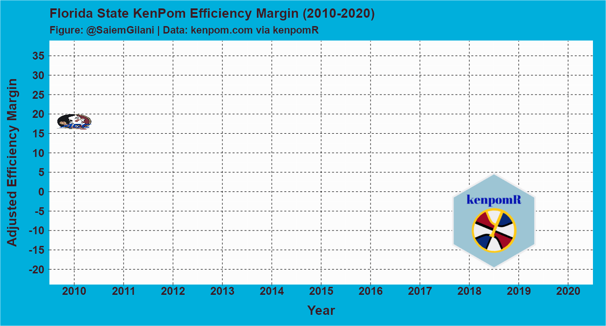

intro-to-kenpomR.RmdWe will be acquiring data from kenpom.com, using the kenpomR package, created by Saiem Gilani. An active subscription to the website will be required for most of this tutorial.
This tutorial will require the use of R and RStudio. You can follow the instructions at R Studio on how to get started.
You can use .Renviron to save your kp_user and kp_pw variables like so:
file.edit("~/.Renviron")Then save that information in a format like this:
kp_user = "your email here"
kp_pw = "your password here"Then we can reference these in our scripts with Sys.env("kp_user") or Sys.env("kp_pw").
library(dplyr)
library(kenpomR)
browser <- login(Sys.getenv("kp_user"), Sys.getenv("kp_pw"))Let’s first just try to get our hands on the Pomeroy ratings for the last 15 years by using the kenpomR::get_pomeroy_ratings() function, which takes the following arguments:
browser - User login sessionmin_year - First year of data to pullmax_year - Last year of data to pull
rtgs <- get_pomeroy_ratings(browser, min_year = 2010, max_year = 2020)## Getting 2010
## Getting 2011
## Getting 2012
## Getting 2013
## Getting 2014
## Getting 2015
## Getting 2016
## Getting 2017
## Getting 2018
## Getting 2019
## Getting 2020
glimpse(rtgs)## Rows: 3,845
## Columns: 23
## $ Year <int> 2020, 2020, 2020, 2020, 2020, 2020, 2020, 2020, 2020...
## $ Rk <dbl> 1, 2, 3, 4, 5, 6, 7, 8, 9, 10, 11, 12, 13, 14, 15, 1...
## $ Team <chr> "Kansas *", "Gonzaga *", "Baylor *", "Dayton *", "Du...
## $ Conf <chr> "B12", "WCC", "B12", "A10", "ACC", "MWC", "B10", "B1...
## $ `W-L` <chr> "28-3", "31-2", "26-4", "29-2", "25-6", "30-2", "22-...
## $ AdjEM <dbl> 30.23, 26.95, 25.49, 24.93, 24.62, 24.48, 24.03, 22....
## $ AdjO <dbl> 115.8, 121.3, 113.5, 119.1, 115.7, 115.1, 115.2, 114...
## $ AdjO.Rk <dbl> 8, 1, 17, 2, 9, 11, 10, 13, 12, 67, 18, 3, 7, 22, 32...
## $ AdjD <dbl> 85.5, 94.4, 88.1, 94.1, 91.1, 90.6, 91.2, 92.0, 93.1...
## $ AdjD.Rk <dbl> 2, 43, 4, 38, 12, 10, 13, 19, 30, 3, 22, 78, 60, 21,...
## $ AdjT <dbl> 67.3, 71.9, 66.2, 67.6, 72.0, 64.6, 69.1, 66.2, 67.1...
## $ AdjT.Rk <dbl> 233, 35, 277, 220, 34, 332, 130, 280, 242, 112, 245,...
## $ Luck <dbl> 0.040, 0.050, 0.016, 0.002, -0.009, -0.008, -0.012, ...
## $ Luck.Rk <dbl> 79, 50, 144, 180, 209, 204, 217, 280, 193, 260, 87, ...
## $ SOS.AdjEM <dbl> 12.66, 2.42, 10.20, 2.74, 7.28, 2.98, 12.04, 11.10, ...
## $ SOS.AdjEM.Rk <dbl> 2, 109, 27, 105, 54, 101, 7, 16, 58, 15, 13, 21, 74,...
## $ SOS.OppO <dbl> 107.4, 103.5, 106.4, 104.1, 106.0, 105.3, 108.6, 108...
## $ SOS.OppO.Rk <dbl> 26, 115, 39, 103, 53, 76, 5, 15, 75, 27, 16, 18, 49,...
## $ SOS.OppD <dbl> 94.7, 101.0, 96.2, 101.3, 98.7, 102.3, 96.5, 96.9, 9...
## $ SOS.OppD.Rk <dbl> 1, 99, 11, 105, 58, 136, 14, 20, 48, 8, 15, 22, 86, ...
## $ NCSOS.AdjEM <dbl> 9.58, -2.09, 1.38, -0.74, 2.60, -1.80, 1.83, -1.31, ...
## $ NCSOS.AdjEM.Rk <dbl> 10, 245, 132, 203, 85, 239, 109, 225, 216, 32, 192, ...
## $ NCAA_Seed <dbl> 1, 1, 1, 1, 3, 2, 3, 5, 4, 6, 3, 2, 5, 7, 2, 6, 4, 2...
library(stringr)
rtgs_acc <- rtgs %>%
dplyr::filter(.data$Conf=="ACC") %>%
group_by(.data$Year,.data$Conf) %>%
dplyr::summarize(
AdjEM = mean(.data$AdjEM)
) %>% ungroup() %>% dplyr::rename(Team = .data$Conf)## `summarise()` regrouping output by 'Year' (override with `.groups` argument)
rtgs_fsu <- rtgs %>%
mutate(
Team = stringr::str_remove(.data$Team, "\\*"),
Team = str_trim(.data$Team, side="both")) %>%
filter(Team == "Florida St.") %>%
arrange(-.data$Year, .data$Rk) %>%
mutate(
Team = str_extract(.data$Team, "(\\w.+)")
) %>% select(Year, Team, AdjEM)
rtgs_plot_data <-rbind(rtgs_fsu, rtgs_acc)## Registering fonts with R
extrafont::loadfonts(device = "win", quiet = TRUE)
library(gifski)
library(ggimage)
library(png)
logo_url <- "https://raw.githubusercontent.com/saiemgilani/kenpomR/master/man/figures/logo.png"
z <- tempfile()
download.file(logo_url,z,mode="wb")
m <- png::readPNG(z)
img <- matrix(rgb(m[,,1],m[,,2],m[,,3], m[,,4] ), nrow=dim(m)[1]) #0.2 is alpha
rast <- grid::rasterGrob(img, interpolate = T)
rtgs_plot_data <- rtgs_plot_data %>%
mutate(
logo = ifelse(.data$Team == 'Florida St.',
"https://a.espncdn.com/i/teamlogos/ncaa/500/52.png?transparent=true&w=35&h=35",
"https://a.espncdn.com/i/teamlogos/ncaa_conf/500/1.png?transparent=true&w=35&h=35"
))
p1 <-
ggplot(rtgs_plot_data,aes(x = .data$Year, y = .data$AdjEM, group=.data$Team))+
geom_line(size=1.5,aes(color=factor(.data$Team))) +
geom_image(aes(x = .data$Year, y = .data$AdjEM), image = rtgs_plot_data$logo, size = .07, by = "height")+
scale_color_manual(labels = c('ACC','Florida St.'),
values = c("navyblue",'#782F40'),
guide = FALSE) +
scale_x_continuous(breaks = seq(2009, 2021, 1)) +
scale_y_continuous(breaks = seq(-20, 35, 5),
limits = c(-21, 36)) +
labs(title="Florida State KenPom Efficiency Margin (2010-2020)",
subtitle="Figure: @SaiemGilani | Data: kenpom.com via kenpomR") +
ylab("Adjusted Efficiency Margin")+ xlab("Year")+
annotation_custom(grob = rast, xmin=2017, xmax=2020, ymin=5, ymax=-20) +
transition_reveal(.data$Year)+
theme(
axis.title.x = element_text(size = 28, margin = margin(1,0,5,0,unit=c("mm")), family = "Gill Sans MT", face = 'bold', color = "#3D1A22"),
panel.grid.major = element_line(color = "black",linetype = "dashed"),
axis.text.x = element_text(size = 24, margin = margin(1,0,5,0,unit=c("mm")), family = "Gill Sans MT", face = 'bold', color = "#3D1A22"),
axis.title.y = element_text(size = 28, margin=margin(4,4,4,4,unit=c("mm")), family = "Gill Sans MT", face = 'bold', color = "#3D1A22"),
axis.text.y = element_text(size = 24, margin=margin(3,3,3,3,unit=c("mm")), family = "Gill Sans MT", face = 'bold', color = "#3D1A22"),
plot.title = element_text(size = 28, margin=margin(t=5,r=0,b=4,l=0,unit=c("mm")), family = "Gill Sans MT", face = 'bold', color = "#3D1A22"),
plot.subtitle = element_text(size = 22, margin = margin(t=0,r=0,b=4,l=0,unit=c("mm")), family = "Gill Sans MT", face = 'bold', color = "#3D1A22"),
plot.caption = element_text(size = 16, margin = margin(t=4,r=0,b=4,l=0,unit=c("mm")), family = "Gill Sans MT", face = 'bold', color = "#3D1A22"),
panel.background = element_rect(fill = "grey99"),
plot.background = element_rect(fill = "#00AFDC"),
plot.margin=unit(c(1,10,1,1),"mm"))
Sys.sleep(1)
animate(p1, fps = 10,start_pause = 5,end_pause = 5, width = 1300, height = 700, renderer = gifski_renderer())
anim_save("fsu_adjEM.gif")
file.remove(z)## [1] TRUE
effs <- get_efficiency(browser, min_year = 2020, max_year = 2020)## Getting 2020
glimpse(effs)## Rows: 353
## Columns: 20
## $ Team <chr> "Mississippi Valley St.", "Houston Baptist", "M...
## $ Conf <chr> "SWAC", "Slnd", "CUSA", "SEC", "MEAC", "OVC", "...
## $ AdjT <dbl> 77.1, 76.1, 74.9, 74.8, 74.7, 74.5, 74.0, 73.9,...
## $ AdjT.Rk <dbl> 1, 2, 3, 4, 5, 6, 7, 8, 9, 10, 11, 12, 13, 14, ...
## $ RawT <dbl> 78.9, 77.9, 75.2, 76.1, 76.2, 75.6, 74.2, 74.6,...
## $ RawT.Rk <dbl> 1, 2, 7, 4, 3, 6, 14, 8, 9, 13, 11, 10, 19, 23,...
## $ AvgPossLengthOff <dbl> 15.6, 14.8, 14.8, 15.2, 15.3, 15.8, 14.4, 14.9,...
## $ AvgPossLengthOff.Rk <dbl> 21, 3, 2, 6, 10, 27, 1, 4, 37, 35, 18, 13, 53, ...
## $ AvgPossLengthDef <dbl> 14.7, 16.0, 17.1, 16.4, 16.2, 15.8, 17.9, 17.3,...
## $ AvgPossLengthDef.Rk <dbl> 1, 5, 111, 18, 10, 2, 302, 171, 4, 19, 40, 71, ...
## $ AdjO <dbl> 89.8, 102.9, 101.2, 111.0, 94.1, 95.4, 105.8, 1...
## $ AdjO.Rk <dbl> 345, 175, 199, 37, 323, 297, 109, 151, 335, 305...
## $ RawO <dbl> 86.7, 102.5, 100.1, 106.0, 94.7, 95.7, 105.4, 1...
## $ RawO.Rk <dbl> 349, 140, 193, 71, 310, 287, 79, 123, 323, 317,...
## $ AdjD <dbl> 117.6, 122.3, 99.1, 99.5, 117.2, 104.9, 110.5, ...
## $ AdjD.Rk <dbl> 349, 352, 106, 114, 347, 230, 319, 175, 177, 32...
## $ RawD <dbl> 112.7, 120.0, 97.8, 102.2, 109.6, 101.7, 107.9,...
## $ RawD.Rk <dbl> 343, 352, 107, 221, 329, 202, 317, 187, 83, 340...
## $ NCAA_Seed <dbl> NA, NA, NA, NA, NA, NA, NA, NA, NA, NA, NA, NA,...
## $ Year <dbl> 2020, 2020, 2020, 2020, 2020, 2020, 2020, 2020,...
ff <- get_fourfactors(browser, min_year = 2020, max_year = 2020)## Getting 2020
glimpse(ff)## Rows: 353
## Columns: 26
## $ Team <chr> "Gonzaga ", "Dayton ", "Creighton ", "LSU ", "Iowa ", "O...
## $ Conf <chr> "WCC", "A10", "BE", "SEC", "B10", "P12", "WCC", "B12", "...
## $ AdjT <dbl> 71.9, 67.6, 68.3, 70.0, 70.2, 65.0, 69.5, 67.3, 72.0, 69...
## $ AdjT.Rk <dbl> 35, 220, 178, 84, 77, 319, 108, 233, 34, 130, 332, 242, ...
## $ AdjO <dbl> 121.3, 119.1, 118.2, 118.1, 117.3, 117.1, 116.3, 115.8, ...
## $ AdjO.Rk <dbl> 1, 2, 3, 4, 5, 6, 7, 8, 9, 10, 11, 12, 13, 14, 15, 16, 1...
## $ eFGpctO <dbl> 57.5, 59.7, 55.2, 52.7, 51.6, 54.3, 58.1, 53.7, 52.6, 52...
## $ eFGpctO.Rk <dbl> 3, 1, 6, 43, 82, 20, 2, 24, 50, 47, 14, 53, 59, 86, 46, ...
## $ TOpctO <dbl> 15.3, 18.0, 15.9, 17.6, 17.1, 17.5, 15.5, 18.7, 17.8, 18...
## $ TOpctO.Rk <dbl> 12, 109, 25, 83, 60, 79, 16, 166, 95, 116, 32, 105, 197,...
## $ ORpctO <dbl> 33.6, 26.4, 23.9, 35.1, 32.0, 32.7, 20.6, 32.6, 34.8, 32...
## $ ORpctO.Rk <dbl> 30, 225, 295, 15, 52, 39, 344, 41, 17, 37, 166, 55, 75, ...
## $ FTRateO <dbl> 38.8, 33.9, 28.8, 35.4, 34.4, 28.9, 23.4, 35.8, 35.6, 30...
## $ FTRateO.Rk <dbl> 43, 143, 274, 102, 128, 272, 343, 89, 99, 226, 284, 193,...
## $ AdjD <dbl> 94.4, 94.1, 97.3, 102.4, 98.6, 97.1, 95.6, 85.5, 91.1, 9...
## $ AdjD.Rk <dbl> 43, 38, 78, 179, 97, 76, 60, 2, 12, 13, 10, 30, 19, 73, ...
## $ eFGpctD <dbl> 47.6, 46.6, 48.4, 49.4, 49.4, 47.3, 49.0, 43.7, 45.7, 43...
## $ eFGpctD.Rk <dbl> 88, 53, 122, 172, 171, 79, 143, 4, 26, 3, 18, 14, 35, 57...
## $ TOpctD <dbl> 18.4, 18.7, 17.6, 16.6, 17.6, 19.8, 18.2, 18.6, 20.2, 15...
## $ TOpctD.Rk <dbl> 196, 167, 246, 302, 258, 109, 206, 178, 91, 331, 49, 265...
## $ ORpctD <dbl> 22.7, 26.6, 30.2, 28.5, 29.5, 31.1, 24.1, 26.4, 28.0, 26...
## $ ORpctD.Rk <dbl> 16, 115, 280, 197, 253, 307, 35, 108, 176, 91, 63, 50, 7...
## $ FTRateD <dbl> 21.8, 30.9, 23.4, 26.4, 26.8, 29.5, 27.9, 23.2, 30.9, 29...
## $ FTRateD.Rk <dbl> 7, 149, 13, 42, 49, 109, 65, 12, 145, 100, 140, 91, 101,...
## $ NCAA_Seed <dbl> 1, 1, 2, 8, 6, 4, 5, 1, 3, 3, 2, 4, 5, 9, 2, 8, 1, 3, NA...
## $ Year <dbl> 2020, 2020, 2020, 2020, 2020, 2020, 2020, 2020, 2020, 20...
hgts <- get_height(browser, min_year = 2020, max_year = 2020)## Getting 2020
glimpse(hgts)## Rows: 353
## Columns: 24
## $ Team <chr> "Florida St. ", "Eastern Michigan", "Gonzaga ", "Wash...
## $ Conf <chr> "ACC", "MAC", "WCC", "P12", "BE", "B10", "SEC", "BE",...
## $ AvgHgt <dbl> 79.0, 78.8, 78.8, 78.7, 78.7, 78.7, 78.7, 78.6, 78.6,...
## $ AvgHgt.Rk <dbl> 1, 2, 3, 4, 5, 6, 7, 8, 9, 10, 11, 12, 13, 14, 15, 16...
## $ EffHgt <dbl> 1.4, 2.3, 2.0, 1.4, 3.2, 1.9, 1.9, 0.8, 1.6, 0.9, 1.5...
## $ EffHgt.Rk <dbl> 27, 4, 7, 33, 1, 14, 15, 67, 20, 59, 24, 9, 30, 5, 41...
## $ CHgt <dbl> 1.6, 2.4, 1.7, 0.5, 4.6, 1.0, 1.7, 0.0, 2.5, 2.0, 1.1...
## $ CHgt.Rk <dbl> 36, 11, 35, 106, 1, 58, 32, 156, 10, 20, 50, 16, 7, 5...
## $ PFHgt <dbl> 1.2, 2.2, 2.4, 2.2, 1.9, 2.7, 2.0, 1.7, 0.7, -0.1, 1....
## $ PFHgt.Rk <dbl> 46, 4, 2, 5, 13, 1, 8, 20, 92, 187, 12, 17, 172, 26, ...
## $ SFHgt <dbl> 2.3, 1.4, 1.6, 2.7, 0.8, 2.2, 1.8, 2.5, 2.2, 1.1, 1.3...
## $ SFHgt.Rk <dbl> 3, 32, 23, 1, 68, 6, 18, 2, 6, 55, 35, 60, 100, 86, 1...
## $ SGHgt <dbl> 2.4, 1.9, 1.5, 2.9, 0.8, 1.8, 1.7, 2.2, 3.2, 2.1, 2.7...
## $ SGHgt.Rk <dbl> 5, 20, 39, 3, 95, 23, 30, 9, 1, 10, 4, 52, 10, 85, 27...
## $ PGHgt <dbl> 3.4, 2.2, 2.6, 1.2, 1.4, 1.7, 2.0, 2.5, 0.1, 3.1, 0.7...
## $ PGHgt.Rk <dbl> 1, 26, 7, 91, 70, 48, 33, 8, 177, 4, 116, 68, 25, 67,...
## $ Experience <dbl> 1.43, 1.94, 1.83, 0.92, 2.08, 1.19, 1.36, 1.04, 1.50,...
## $ Experience.Rk <dbl> 264, 103, 141, 342, 64, 309, 286, 328, 248, 148, 310,...
## $ Bench <dbl> 38.5, 30.9, 23.6, 28.4, 33.0, 32.2, 22.6, 18.9, 30.8,...
## $ Bench.Rk <dbl> 24, 155, 313, 222, 107, 127, 320, 345, 156, 247, 349,...
## $ Continuity <dbl> 41.4, 24.4, 23.4, 25.3, 68.9, 31.7, 55.3, 46.5, 48.3,...
## $ Continuity.Rk <dbl> 222, 323, 331, 315, 23, 297, 115, 183, 173, 37, 231, ...
## $ NCAA_Seed <dbl> 2, NA, 1, NA, 3, NA, NA, 2, NA, 11, NA, 7, NA, NA, NA...
## $ Year <int> 2020, 2020, 2020, 2020, 2020, 2020, 2020, 2020, 2020,...
plyrstats <- get_team_player_stats(browser, team = 'Florida St.', year = 2020)
glimpse(plyrstats[[1]])## Rows: 13
## Columns: 30
## $ Role <chr> "Significant Contributor", "Significant Contributor", "Sig...
## $ Number <int> 3, 23, 4, 1, 24, 2, 0, 15, 5, 31, 10, 11, 30
## $ Player <chr> "Trent Forrest", "MJ Walker", "Patrick Williams", "Raiquan...
## $ Ht <chr> "6-4", "6-5", "6-8", "6-8", "6-7", "6-6", "6-4", "7-0", "7...
## $ Wt <int> 210, 213, 225, 260, 194, 215, 210, 260, 260, 220, 225, 195...
## $ Yr <chr> "Sr", "Jr", "Fr", "So", "So", "So", "Jr", "Sr", "Fr", "So"...
## $ G <int> 31, 26, 29, 29, 30, 31, 29, 29, 27, 28, 31, 13, 10
## $ Minpct <dbl> 76.4, 52.2, 52.2, 45.1, 68.9, 49.3, 26.6, 24.9, 22.3, 20.5...
## $ ORtg <dbl> 103.2, 104.1, 104.6, 91.0, 124.8, 103.1, 105.5, 106.6, 125...
## $ Posspct <dbl> 22.9, 21.4, 21.7, 20.8, 18.8, 16.1, 17.1, 19.8, 19.5, 18.1...
## $ Shotspct <dbl> 20.0, 23.7, 21.5, 17.8, 23.1, 17.0, 13.8, 19.6, 17.7, 21.9...
## $ eFGpct <dbl> 48.8, 46.7, 49.8, 42.2, 56.5, 51.6, 50.7, 61.1, 69.9, 55.4...
## $ TSpct <dbl> 54.2, 51.9, 55.3, 47.9, 58.5, 53.2, 55.6, 62.1, 69.7, 56.8...
## $ ORpct <dbl> 4.2, 1.1, 6.9, 6.3, 5.2, 4.6, 1.8, 12.6, 13.2, 5.1, 11.7, ...
## $ DRpct <dbl> 12.4, 6.8, 13.9, 16.7, 15.4, 12.7, 10.5, 12.3, 14.2, 8.2, ...
## $ ARate <dbl> 24.1, 10.7, 8.4, 12.4, 11.2, 9.9, 21.7, 2.6, 5.8, 10.8, 4....
## $ TORate <dbl> 24.1, 15.6, 20.3, 25.0, 8.2, 20.9, 24.2, 24.2, 17.9, 17.3,...
## $ Blkpct <dbl> 2.3, 1.1, 5.6, 4.1, 4.1, 1.4, 1.1, 6.3, 3.1, 1.0, 4.7, 0.0...
## $ Stlpct <dbl> 3.5, 1.8, 2.6, 3.2, 2.8, 3.5, 1.4, 1.7, 1.9, 1.8, 1.8, 0.8...
## $ FCper40 <dbl> 1.9, 3.7, 2.9, 4.8, 2.7, 3.1, 2.6, 5.9, 5.9, 4.1, 3.8, 7.6...
## $ FDper40 <dbl> 3.9, 4.1, 4.0, 4.2, 3.0, 2.3, 3.5, 2.8, 4.4, 1.8, 2.7, 2.3...
## $ FTRate <dbl> 35.7, 33.2, 35.8, 46.6, 22.1, 18.1, 48.5, 21.1, 52.0, 6.0,...
## $ `FTM-A` <chr> "83-101", "61-76", "62-74", "48-69", "48-65", "19-28", "24...
## $ FTpct <dbl> 0.822, 0.803, 0.838, 0.696, 0.738, 0.679, 0.727, 0.684, 0....
## $ `2PM-A` <chr> "114-226", "41-107", "79-157", "49-107", "100-188", "29-59...
## $ FG2pct <dbl> 0.504, 0.383, 0.503, 0.458, 0.532, 0.492, 0.471, 0.611, 0....
## $ `3PM-A` <chr> "16-57", "44-122", "16-50", "9-41", "44-106", "34-96", "7-...
## $ FG3pct <dbl> 0.281, 0.361, 0.320, 0.220, 0.415, 0.354, 0.412, 0.000, 0....
## $ Team <chr> "Florida St.", "Florida St.", "Florida St.", "Florida St."...
## $ Year <dbl> 2020, 2020, 2020, 2020, 2020, 2020, 2020, 2020, 2020, 2020...
glimpse(plyrstats[[2]])## Rows: 11
## Columns: 30
## $ Role <chr> "Significant Contributor", "Significant Contributor", "Sig...
## $ Number <int> 3, 23, 4, 1, 15, 31, 24, 2, 0, 5, 10
## $ Player <chr> "Trent Forrest", "MJ Walker", "Patrick Williams", "Raiquan...
## $ Ht <chr> "6-4", "6-5", "6-8", "6-8", "7-0", "6-8", "6-7", "6-6", "6...
## $ Wt <int> 210, 213, 225, 260, 260, 220, 194, 215, 210, 260, 225
## $ Yr <chr> "Sr", "Jr", "Fr", "So", "Sr", "So", "So", "So", "Jr", "Fr"...
## $ G <int> 20, 18, 18, 20, 19, 17, 19, 20, 19, 16, 20
## $ Minpct <dbl> 77.8, 56.9, 52.8, 46.0, 25.3, 18.8, 72.0, 48.5, 28.2, 15.9...
## $ ORtg <dbl> 104.4, 105.5, 101.2, 93.2, 102.8, 108.5, 126.9, 101.7, 106...
## $ Posspct <dbl> 22.7, 20.7, 20.9, 20.6, 20.8, 20.9, 18.7, 16.7, 16.3, 19.7...
## $ Shotspct <dbl> 20.1, 23.4, 20.9, 16.7, 20.1, 24.9, 22.9, 17.7, 13.9, 17.8...
## $ eFGpct <dbl> 49.5, 48.1, 46.2, 45.1, 59.0, 56.2, 58.8, 51.0, 53.2, 58.8...
## $ TSpct <dbl> 54.4, 52.2, 52.2, 50.5, 60.4, 57.1, 60.4, 52.0, 55.0, 60.1...
## $ ORpct <dbl> 3.9, 1.0, 7.7, 6.6, 12.0, 5.4, 5.0, 5.4, 1.5, 17.3, 11.3
## $ DRpct <dbl> 13.7, 5.0, 14.2, 16.6, 12.5, 7.7, 16.4, 12.5, 12.2, 11.8, ...
## $ ARate <dbl> 24.8, 10.6, 4.4, 11.5, 4.0, 10.3, 12.5, 10.0, 23.1, 9.2, 3.2
## $ TORate <dbl> 23.7, 15.3, 19.0, 25.9, 26.0, 20.2, 9.6, 21.4, 23.5, 13.8,...
## $ Blkpct <dbl> 2.1, 1.1, 6.5, 4.2, 7.7, 0.8, 3.5, 0.6, 1.1, 1.9, 5.5
## $ Stlpct <dbl> 4.1, 1.8, 2.2, 2.7, 1.4, 1.5, 2.2, 3.0, 0.5, 1.4, 1.5
## $ FCper40 <dbl> 1.9, 3.8, 3.1, 5.7, 5.5, 4.8, 2.5, 3.7, 2.5, 5.0, 4.0
## $ FDper40 <dbl> 3.6, 3.6, 4.0, 4.3, 2.6, 1.8, 2.5, 2.1, 2.8, 4.2, 2.8
## $ FTRate <dbl> 31.6, 27.5, 37.1, 52.2, 18.0, 3.6, 15.7, 13.6, 34.0, 47.1,...
## $ `FTM-A` <chr> "49-59", "35-44", "40-49", "33-48", "8-11", "2-2", "24-31"...
## $ FTpct <dbl> 0.831, 0.795, 0.816, 0.688, 0.727, 0.999, 0.774, 0.643, 0....
## $ `2PM-A` <chr> "79-150", "26-73", "46-99", "31-69", "36-61", "6-16", "67-...
## $ FG2pct <dbl> 0.527, 0.356, 0.465, 0.449, 0.590, 0.375, 0.540, 0.395, 0....
## $ `3PM-A` <chr> "9-37", "34-87", "10-33", "7-23", "0-0", "17-40", "33-74",...
## $ FG3pct <dbl> 0.243, 0.391, 0.303, 0.304, 0.000, 0.425, 0.446, 0.385, 0....
## $ Team <chr> "Florida St.", "Florida St.", "Florida St.", "Florida St."...
## $ Year <dbl> 2020, 2020, 2020, 2020, 2020, 2020, 2020, 2020, 2020, 2020...